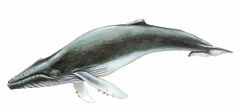
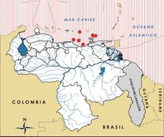

Megaptera novaeangliae
| Ballena jorobada | |
|---|---|
|  | |
| Riesgo de extinción | |
 Vulnerable (UICN) | |
| Clasificación científica | |
| Reino: | Animalia |
| Filo: | Chordata |
| Clase: | Mammalia |
| Orden: | Cetacea |
| Familia: | Balaenopteridae |
| Género: | Megaptera |
| Especie: | Megaptera novaeangliae |
| Nombre binomial | |
|
Megaptera novaeangliae Borowski, 1781 | |
| Distribución | |
|
 Mapa de distribución de Megaptera novaeangliae | |
Contenido
Información de Evaluación
- Categoría y Criterio Regional: Vulnerable A1ad+2e
- Fecha de Evaluación Regional: 2015
- Evaluadores: Jesús Morales-Campos y Ariany García-Rawlins
- Categoría y Criterio Global: Preocupación Menor
Justificación
Evaluaciones Previas
1999: No Evaluado (NE)
2008: Vulnerable (VU)
Información General
Nombres comunes
Ballena jorobada, yubarta, ballena de aletas grandes, humpback whale.
Notas taxonómicas
Sinónimos
Descripción
Ballena cosmopolita de gran tamaño, cuyos adultos pueden alcanzar hasta 18 m de longitud y 40 toneladas de peso. Es de las especies más fáciles de reconocer debido a su comportamiento acrobático y gran tamaño de sus aletas pectorales (hasta 5-6 m), además por la presencia de numerosas protuberancias en cabeza y mandibular (Jefferson et al. 1994, Clapham 2009). Su aleta caudal puede ser blanca u oscura en su región ventral, con un patrón de coloración único para cada individuo; la cola presenta un modelo de aserraciones en su borde posterior, visible al sumergirse, que permite diferenciarla de otras ballenas y del cachalote (Physeter macrocephalus) (Jefferson et al. 1994, Clapham 2009). Posee entre 16 y 20 surcos ventrales que hacen posible que abra la boca a modo de acordeón para alimentarse; durante el verano consume peces pequeños en latitudes polares o subpolares (Jefferson et al. 1994, Swartz et al. 2003, Clapham 2009), acumulando el exceso de alimento en su cuerpo en forma de grasa ya que durante su migración hacia las zonas reproductivas no come o lo hace muy poco (Stern 2009). En la temporada reproductiva, los machos emiten complejos cantos característicos de cada población, en apariencia con fines de dominancia o de acceso a las hembras reproductivas (Clapham 2009). El género Megaptera solo cuenta con la especie M. novaeangliae (monotípico). Un reciente estudio genético reconoce a las poblaciones del Pacífico Norte, Atlántico Norte y Hemisferio Sur como tres subespecies, respectivamente (Jackson et al. 2014). Su nombre científico deriva del griego (mega: grande + apteron: aletas) y del latín novaeangliae (por Nueva Inglaterra, en referencia a la región de la cual provenía el ejemplar utilizado por Borowski para su descripción) (Clapham 2009).
Distribución
La distribución de Megaptera novaeangliae abarca todos los océanos entre las latitudes 60ºS a 65ºN. Frecuenta las regiones polares y subpolares de ambos hemisferios en el verano y migra hacia los trópicos durante el invierno para reproducirse (Jefferson et al. 1994, Swartz et al. 2003, Clapham 2009). En Venezuela, la ballena jorobada es uno de los cetáceos documentados con mayor frecuencia. Entre 1853 y 2015 se registró un mínimo de tres capturas por barcos balleneros, 49 avistamientos, cuatro varamientos y 14 detecciones acústicas (Boher y García 1991, Naveira 1996, Naveira y Díaz 1996, Swartz et al. 2003, Silva, N. et al. 2006, Acevedo 2007, Acevedo et al. 2007, Acevedo et al. 2008, Iclam 2009, J. Bolaños-Jiménez, R. Acevedo, L. Bermúdez-Villapol, S. Boher-Bentti, L. Oviedo y A. Villarroel-Marín obs. pers.). Los varamientos y avistamientos ocurridos en diferentes épocas a lo largo del año permiten establecer la hipótesis de que ballenas provenientes de ambos hemisferios (Norte y Sur) visitan aguas territoriales venezolanas (Acevedo et al. 2008, Bolaños-Jiménez et al. 2008). En los islotes de Los Frailes y adyacencias de la isla de Margarita se han documentado agregaciones de madres y crías (Acevedo et al. 2008).
- Sistema: Marino
- Bioregión:
- Intervalo altitudinal (m):
- Endémica: No
Situación
Megaptera novaeangliae se encuentra entre los primeros cetáceos cazados comercialmente por la industria ballenera moderna, cuyas altas tasas de captura condujeron a una drástica reducción de las poblaciones (Stevick et al. 2003, Swartz et al. 2003, Clapham 2009). La población del Atlántico Norte se estima en por lo menos 11.570 individuos (Stevick et al. 2003) y parece haberse recuperado de modo notable, por lo cual a nivel internacional es considerada de Preocupación Menor (Reilly et al. 2008). No obstante, estimados recientes indican que la especie fue mucho más abundante en el siglo XIX y principios del XX de lo que es hoy en día en regiones como Venezuela (incluyendo el mar Caribe y el golfo de Paria); esta aparente poca abundancia en un área reproductiva antiguamente importante, podría implicar fallas en la recuperación de la población, a pesar de las medidas de protección establecidas (Swartz et al. 2003, Acevedo et al. 2008). En nuestro país no existen estimados poblacionales, pero durante los últimos años la especie ha sido avistada y fotografiada con relativa frecuencia en la región nororiental, sobre todo durante la época que corresponde a la migración de las ballenas del Atlántico Norte (J. Bolaños-Jiménez, R. Acevedo, L. Bermúdez-Villapol, S. Boher-Bentti, L. Oviedo y A. Villarroel-Marín obs. pers.).
- EOO (km2): Temporalmente sin información
- AOO (km2): Temporalmente sin información
- Tendencia Poblacional: Incrementando
Amenazas
La mayor amenaza para Megaptera novaeangliae provino de las capturas por parte de la industria ballenera. Se estima que durante el siglo XX más de 213.000 individuos se sacrificaron solo en el Hemisferio Sur (Clapham 2009). La gran magnitud del ruido industrial en el interior del golfo de Paria ha sido citada como una de las posibles causas de que esta especie no haya vuelto a utilizar esta área durante su época de reproducción (Swartz et al. 2003, Acevedo et al. 2008). La mayor vulnerabilidad de M. novaeangliae está dada por sus hábitos costeros y su afinidad con bahías protegidas como áreas de apareamiento y cría, usualmente cercanas a asentamientos humanos (Oviedo 2005, Acevedo et al. 2007, Acevedo et al. 2008, Clapham 2009).
Conservación
M. novaeangliae se encuentra incluida en el Apéndice I de la Convención sobre el comercio internacional de especies amenazadas de fauna y flora silvestres (Cites 2014) y en el Anexo II del Protocolo relativo a las áreas y flora y fauna silvestres especialmente protegidas en la Región del Gran Caribe del Convenio de Cartagena (SPAW 1991). Bajo los auspicios de la Secretaría del Protocolo SPAW, se han firmado convenios de hermanamiento de santuarios marinos entre los Estados Unidos de Norteamérica, Francia y la República Dominicana mediante los cuales se brinda protección a la población de ballena jorobada que se reproduce en aguas del mar Caribe. El proyecto contempla el «hermanamiento» de los santuarios marinos Agoa (Antillas Francesas), Stellwagen Bank (Massachussetts, Estados Unidos), República Dominicana y el santuario proyectado para las Antillas Holandesas (Government of the Netherlands 2013, Geelhoed et al. 2014, Lucke et al. 2014, J. Bolaños-Jiménez obs. pers.). En nuestro país, la yubarta ha sido declarada Especie en Veda (Venezuela 1996a) y En Peligro de Extinción (Venezuela 1996b). De conformidad con los ejes transversales cinco (Legislación ambiental) y siete (Gestión y política internacional) de la Estrategia nacional de diversidad biológica (Minamb 2010), la reincorporación de Venezuela a la Comisión Ballenera Internacional (CBI) y su ingreso al Grupo Buenos Aires (GBA, integrado por los países latinoamericanos miembros de la CBI), contribuiría a fortalecer el movimiento latinoamericano y caribeño en favor del turismo de observación como alternativa ante la propuesta de los países que promueven el uso de cetáceos por medios letales (Bolaños-Jiménez et al. 2011).
Autorías
Autores originales
Jaime Bolaños-Jiménez, Romina Acevedo, Luis Bermúdez-Villapol, Salvador Boher-Bentti, Lenín Oviedo y Auristela Villarroel-Marín
Colaboradores
Ilustrador
Astolfo Mata
Referencias
- Acevedo, R. (2007). Potential geographic distribution of seven species of marine cetaceans reported in Venezuela, Southeast Caribbean. Acta Zoológica Sinica 53(5): 853-864.
- Acevedo, R., Oviedo, L. y Silva, N. (2007). Identification of key areas for the conservation of mysticete cetaceans in the waters near Margarita Island, Venezuela. Memoria de la Fundación La Salle de Ciencias Naturales 167: 73-78.
- Acevedo, R., Oviedo, L., Silva, N. y Bermúdez-Villapol, L. (2008). A note on the spatial and temporal distribution of humpback whales (Megaptera novaeangliae) off Venezuela, Southeastern Caribbean. Journal of Cetacean Research and Management 10(1): 73-79.
- Boher, S. y García, H. (1991). Un varamiento de ballena jorobada (Megaptera novaeangliae) en la costa continental venezolana. Serie Informes Técnicos del Servicio Autónomo Profauna. Caracas: Profauna, MARNR. 10 pp (mimeografiado).
- Bolaños-Jiménez, J., Acevedo, R., Bermúdez-Villapol, L., Boher-Bentti, S., Oviedo, L. y Villarroel-Marín, A. (2015). Ballena jorobada, Megaptera novaeangliae. En: J.P. Rodríguez, A. García-Rawlins y F. Rojas-Suárez (eds.) Libro Rojo de la Fauna Venezolana. Cuarta edición. Provita y Fundación Empresas Polar, Caracas, Venezuela. Recuperado de: animalesamenazados.provita.org.ve/content/ballena-jorobada Vie, 09/03/2018 - 11:01
- Bolaños-Jiménez, J., Castro, N. J., Herrera, O., Esté, B. y Sifontes, L. (2011). Diez razones por las cuales los venezolanos debemos recuperar el derecho a voz y voto en la Comisión Ballenera Internacional. II Congreso Venezolano de Diversidad Biológica, Ministerio del Poder Popular para el Ambiente. Caracas, mayo de 2011.
- Bolaños-Jiménez, J., Linares, O. J., Portocarrero, M. y Trujillo, F. (2008). Tonina del Orinoco Inia geoffrensis Blainville 1817. Página: 113. En: Rodríguez, J. P. y Rojas-Suárez, F. (Eds.). Libro Rojo de la Fauna Venezolana (Tercera edición). Provita y Shell Venezuela S. A. Caracas, Venezuela, 332 pp.
- Cites. (2014). Apéndices I, II y III (válidos desde el 14 de septiembre de 2014). Convención sobre el Comercio Internacional de Especies Amenazadas de Fauna y Flora Silvestres (CITES). 47 pp.
- Clapham, P. (2009). Humpback whale, Megaptera novaeangliae. Páginas: 582-585. En: Perrin, W. F., Wursig, B. y Thewissen, J. G. M. (Eds.). Encyclopedia of Marine Mammals. 2nd edition. Academic Press. San Diego, California, Estados Unidos.
- Geelhoed, S. C. V., Janinhoff, N., Verdaat, J. P., van Bemmelen, R. S. A. y Scheidat, M. (2014). Aerial surveys of marine mammals and other fauna around Aruba, Curaçao and Bonaire, November 2013. IMARES - Institute for Marine Resources & Ecosystem Studies Report C012/14.
- Government of the Netherlands. (2013). Nature Policy Plan Caribbean Netherlands 2013-2017. Ministry of Economic Affairs, Direction Nature and Biodiversity.
- Iclam (2009). Informe sobre varamiento de ballena jorobada (Megaptera novaeangliae) en la costa de Uyarcira, Municipio Páez, Estado Zulia. Mimeografiado.
- Jackson, J. A., Steel, D. J., Beerli, P., Congdon, B. C., Olavarría, C., Leslie, M. S., Pomilla, C., Rosenbaum, H. y Scott Baker, C. (2014). Global diversity and oceanic divergence of humpback whales (Megaptera novaeangliae). Proceedings of the Royal Society of London B 281(1786): 20133222.
- Jefferson, T. A., Leatherwood, S. y Webber, M. A. (1994). Marine Mammals of the World. FAO species identification guide. Rome: FAO. 320 pp.
- Lucke, K., Scheidat, M., Geelhoed, S. C. V., Debrot, D., Ward, N., Harch, L., Wiley, D., McDonald, C., Reynolds, J., Hoetjes, P., Bolaños-Jiménez, J., Souan, H., Vandersarren, G. y Gandhilon, N. (2014). Marine mammals in the Wider Caribbean - Current research and priorities for future studies. Institute for Marine Resources & Ecosystem Studies. The Hague, The Netherlands, Report number C007/14.
- Minamb (2010). Memoria y cuenta año 2009. Ministerio del Poder Popular para el Ambiente, Oficina de Planificación y Presupuesto, Dirección de Planificación. Venezuela: 419 pp.
- Naveira, J. L. (1996). El Orden Cetacea en la región nororiental de Venezuela. Tesis de Grado, M. Sc., Universidad de Oriente. Cumaná. 181 pp.
- Naveira, J. L. y Díaz, O. (1996). Primer registro de varamiento del cetáceo barbado Megaptera novaeangliae (Borowski, 1781) (Mysticeti, Balaenopteridae) para la región nororiental de Venezuela. Boletín del Instituto Oceanográfico, Universidad de Oriente 35(1): 99-104.
- Oviedo, L. (2005). Cetaceans as seascope species in the northeast coast of Venezuela: preliminary assessment based on the seascape species approach. Paper presented at the XVI Conference on the Biology of Marine Mammals. San Diego, California, December 2005 (unpublished): 215 pp.
- Reilly, S. B., Bannister, J. L., Best, P. B., Brown, M., Brownell Jr., R. L., Butterworth, D. S., Clapham, P. J., Cooke, J., Donovan, G. P., Urbán, J. y Zerbini, A. N. (2008). Megaptera novaeangliae. The IUCN Red List of Threatened Species 2008. Disponible en www.iucnredlist.org/details/13006/0.
- Rodríguez, J. P. y Rojas-Suárez, F. (1999). Libro Rojo de la Fauna Venezolana, segunda edición. PROVITA, Fundación Polar. Caracas. 444 pp.
- Rodríguez, J. P. y Rojas-Suárez, F. (Eds.) (2008). Libro Rojo de la Fauna Venezolana, tercera edición. Provita y Shell Venezuela, S. A. Caracas, Venezuela. 364 pp.
- Silva, N., Acevedo, R. y Oviedo, L. (2006). Preliminary observations on the spatial distribution of humpback whales off the north coast of Margarita Island, Venezuela-south-east Caribbean. JMBA1 - Biodiversity Records. Disponible en www.mba.ac.uk/jmba/pdf/5224.pdf.
- SPAW (1991). Procotolo Relativo a las Áreas y a la Flora y Fauna Silvestres Especialmente Protegidas del Convenio para la Protección y el Desarrollo del Medio Marino en la Región del Gran Caribe (conocido como SPAW, por sus siglas en inglés). Anexo III: List of Species of Marine and Coastal Flora and Fauna Protected Under Article 11(1)(c). 11 11(1).
- Stern, S. J. (2009). Migration and movement patterns. En: Perrin, W. F., Wursig, B. y Thewissen, J. G. M. (Eds.). Encyclopedia of Marine Mammals. 2nd ed. Academica Press. San Diego, California, Estados Unidos.
- Stevick, P. T., Allen, J., Clapham, P. J., Friday, N., Katona, S. K., Larsen, F., Lien, J., Mattila, D. K., Palsboll, P. J., Sigurjónsson, J., Smith, T. D., Oien, N. y Hammond, P. S. (2003). North Atlantic humpback whale abundance and rate of increase four decades after protection from whaling. Marine Ecology Progress Series 258: 263-273.
- Swartz, S., Cole, T., McDonald, M. A., Hildebrand, J., Oleson, E. M., Martínez, A., Clapham, P. J., Barlow, J. y Jones, M. L. (2003). Acoustic and visual survey of humpback whale (Megaptera novaeangliae) distribution in the eastern and southeastern Caribbean. Caribbean Journal of Science 39(2): 195-208.
- Venezuela. (1996a). Decreto 1485: Animales Vedados para la Caza. Gaceta Oficial No. 36.059 - 7 de octubre de 1996. Caracas.
- Venezuela. (1996b). Decreto 1486: Especies en Peligro de Extinción. Gaceta Oficial No. 36.062- 10 de octubre de 1996. Caracas.